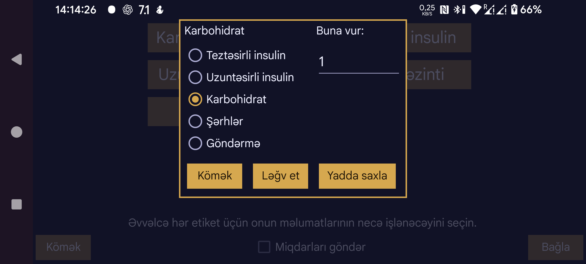

LibreView üçün olduğu kimi, Juggluco-nun Nightscout serveri üzərindən Miqdarların necə təqdim olunacağını da müəyyən etmək olar.
Juggluco-da müəyyən etiket altında daxil edilmiş Miqdarların LibreView-a hansı kateqoriyada göndəriləcəyini seçin. Bir neçə müxtəlif Juggluco etiketini LibreView-ın eyni kateqoriyasına uyğunlaşdırmaq mümkündür. Məsələn, karbohidratlı qidaları və saf qlükozanı Juggluco-da ayrı etiketlərlə qeyd edirsinizsə, hər ikisini LibreView-a Karbohidrat kimi göndərə bilərsiniz.
Karbohidrat kateqoriyasında Juggluco-da qeyd edilmiş miqdarı başqa vahidlərdən qrama çevirmək üçün müəyyən ədədə vurmaq olar. Məsələn, Juggluco-da 10 qramlıq porsiyaları sayırsınızsa, burada 10 yazın ki, LibreView-a qramla miqdar göndərilsin.
Şərhlər: Miqdar LibreLink-də şərh yazmış kimi LibreView-a göndərilir. Bu seçimdə etiketin adı və daxil edilmiş ədəd birlikdə ötürülür. Məsələn, Velosiped etiketinə 50 daxil etmisinizsə, Velosiped 50 göndərilir. Həmin qeyd LibreView-da göstərilmiş vaxtda Gündəlik jurnal qrafikinin altında görünəcək.